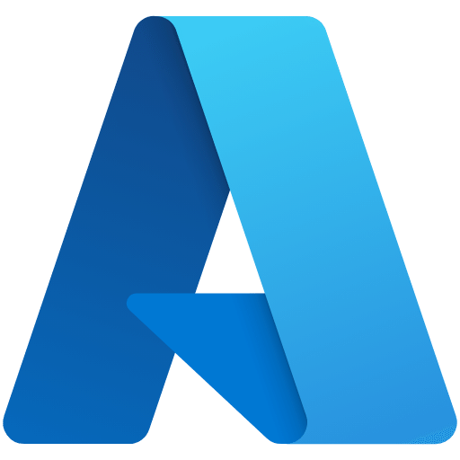

Sou Analista de Dados, mas minha base vem da sustentação de sistemas e isso muda tudo na forma como investigo um problema. Trabalho com SQL, Python e análise de logs para investigar problemas em produção, identificar padrões de falha e apoiar times de produto e engenharia na tomada de decisão. Tenho experiência com modelagem de dados, Power BI, Databricks, pipelines ELT e processamento distribuído com Spark.
Atuo em uma plataforma corporativa baseada em LiteLLM, com foco em observabilidade, governança e análise do uso de modelos de IA. Esse contexto me permite unir experiência técnica, visão analítica e entendimento operacional para construir análises que contam histórias sólidas e de fácil compreensão. Neste portfólio você encontra projetos que refletem essa forma de trabalhar.
 Python
Python
 Pandas
Pandas
 SQL
SQL

Azure Jupyter
Jupyter
 Git
Git
 E-mail
E-mail
 WhatsApp
WhatsApp
 LinkedIn
LinkedIn
 GitHub
GitHub
 Currículo
Currículo